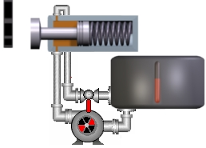

O algoritmo de controlo utilizado no sistema de travagem baseia-se nas seguintes ideias:
1.Princípio do projecto de falha/segurança: este princípio estabelece que um dispositivo que controla uma parte importante de um sistema deve ser projetado de tal forma que, se falhar, ele deixa o sistema em uma posição "seguro".
2. Activar o desligamento rápido do comboio de potência. Este requisito decorre da utilização secundária do mecanismo de travagem como "alternativa de segurança" no caso de o comboio de potência não poder ser desacelerado por meios aerodinâmicos.
3. Minimização do número de sensores e atuadores.
Este mecanismo de travagem do comboio de potência NÃO é o mecanismo utilizado paradesligamentooperações (recorte): estas operações são realizadas usando métodos aerodinâmicos, isto é, usando as lâminas, mudando seu ângulo de ataque, ou, em alguns modelos mais antigos que não tinham um mecanismo de mudança de passo, mudando a forma. Veja a figura a seguir.

No entanto, em condições excepcionais, por exemplo, quando o mecanismo de passo falha, ou alguns RPMs foram ultrapassados no trem de potência, ou uma parada muito rápida é necessária, o controlador também usa o freio hidráulico.
No design escolhido, o "descanso" posição é com o sapato pressionado contra o disco de freio pela mola do cilindro. Isto segue o princípio de funcionamento 'Falha/Salvar' (se algo der errado, o mecanismo permanece em umseguroposição), neste caso, a posição segura é o desligamento do comboio de energia.
Quando a turbina eólica está em produção, o sapato do freio está longe do disco, por isso não interfere com o movimento do trem de potência. Para que isso aconteça, é necessário neutralizar a pressão da mola no cilindro que força o sapato do freio. Isto é conseguido aumentando a pressão hidráulica aplicada à base da mola. Este aumento de pressão é alcançado através da regulação da válvula para a posição "fechada" e do arranque da bomba.

Quando você quiser frear (sapato contra o disco), simplesmente reduzir a pressão hidráulica na base da mola. Isto é conseguido abrindo a válvula. Geralmente há mais de uma válvula, com diferentes vazões, de modo que a velocidade da queda de pressão, e portanto a frenagem, pode ser ajustada (em certa medida).
Finalmente, na concepção deste circuito, são utilizados um mínimo de elementos: uma bomba, um reservatório para o líquido, a(s) válvula(s), o interruptor de pressão (não mostrado) e o sensor de separação de sapatos (não mostrado).
Acondiçãodo sapato do travão não é medido por nenhum sensor, mas édeduzidopelo controlador durante a fase de arranque (cutina). O procedimento consiste em aplicar um binário mecânico significativo ao comboio de potência, mantendo o travão hidráulico activo (seca contra o disco). Este torque mecânico é alcançado orientando a nacele para o vento e definindo um valor de pitch que garante a utilização máxima do vento com baixos valores de rotação (ou seja, comTSR practically 0). In these circumstances, the rotation speed of the power train is monitored: if it is not 0 (stopped), it is due to a problem with the shoe or the cylinder spring; in these circumstances, the cutin operation is aborted.
A bomba é usada para manter a pressão na base da mola a um valor que garante que, na produção, o sapato não esfregue contra o disco de freio. Para isso, esta pressão não é medida, mas sim um dispositivo mais robusto, um interruptor de pressão, calibrado à pressão desejada. Desta forma, o controlador recebe apenas um sinal digital (a saída do interruptor de pressão) e tem que controlar dois outros sinais digitais: o controle da bomba e o(s) controle(s) da válvula. Há também um interruptor de limite que é ativado quando o sapato do freio já está separado do disco do freio. Este sinal corresponde ao sinal associado ao botão 'Brake liberado'. O valor de pressão em que este sinal é tipicamente activado corresponde aoAmarelo 'marcarno indicador de pressão do circuito hidráulico circular.
A evolução dos sinais relacionados a este circuito hidráulico pode ser observada usando um dos "Painéis de gravador predefinidos" (clicando no sinóptico de controle de execução:«Synoptics ' --> Gravadores 'um formulário de gravador é exibido, e em«Painéis definidos 'selecionar« Circuito de travão hidráulico '). Você pode observar a variação de vários sinais do circuito hidráulico durante diferentes situações de operação e paragem.
Os conceitos básicos de controle são baseados na histerese do interruptor de pressão, cuja saída é usada pelo controlador para iniciar a bomba quando seu valor é 'Off', ou seja, a pressão está abaixo do limite de calibração inferior do interruptor de pressão. E parar a bomba quando a pressão exceder o limite superior do interruptor de pressão. Presume-se que as válvulas estão fechadas. A figura seguinte ilustra este método de controlo.